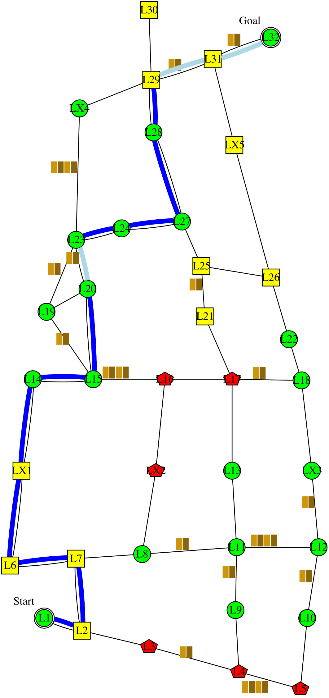

I'm planning to follow this policy . It is expected to have 0.2 collision; take 149 minutes; and have intrusiveness-penalty of 7: be somewhat-intrusive 7 steps, non-intrusive 5 steps, and very-intrusive 0 step. Alternatively, following this policy would reduce the time to 138 minutes. However, I didn't choose that policy because it would increase the collision to 0.6 collision. The decrease in time is not worth the increase in collision. Alternatively, following this policy

would reduce the intrusiveness to 6: non-intrusive 6 steps, somewhat-intrusive 6 steps, and very-intrusive 0 step. However, I didn't choose that policy because it would increase the collision to 0.6 collision, and increase the time to 156 minutes. The decrease in intrusiveness is not worth the increase in collision, and the increase in time. Alternatively, following this policy

would reduce the collision to 0 collision. However, I didn't choose that policy because it would increase the time to 160 minutes. The decrease in collision is not worth the increase in time.